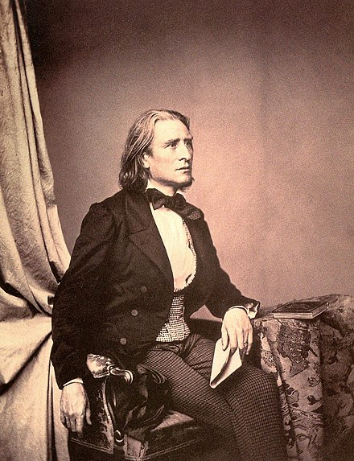

FERENCS (FRANCS) LISTS (1811-1886)
Ungāru komponists Ferencs Lists ir viens no spilgtākajiem romantisma pārstāvjiem Eiropā, un viņš ir bijis ļoti daudzpusīga personība — ne tikai komponists, bet arī virtuozs pianists, diriģents, pedagogs, publicists, sabiedrisks darbinieks, daudzu laikabiedru mākslas propagandētājs un atbalstītājs. Lista dzīve bija saistīta ne tikai ar Ungāriju — liela nozīme ir arī viņa sakariem ar Franciju (Parīze), Vāciju (Veimāra) un citām zemēm.
|
Svarīgākie biogrāfijas fakti un dzīves periodi 1820 — 1835 Pārcelšanās uz Vīni, klavierspēle pie Karla Černi, teorija un kompozīcija pie Antonio Saljēri. Kopš 1823.gada dzīvojis Parīzē, kontaktējies ar virtuoziem Paganīni, Šopēnu, programmatisma piekritēju Berliozu. Iepazīšanās ar rakstnieci Marija d'Agū, kas kļuva par Lista sirdsdraudzeni un devās viņam līdzi ceļojumos. 1835 — 1847 (klejojuma gadi - Šveice, Itālija, Ungārija) Triumfālu koncertturneju laiks, kas noslēdzās tikai tāpēc, ka Lists vairs nevēlējās izdabāt publikas gaumei (vēlmei pēc virtuozas, uztverei vieglas mūzikas). Vienā no šī perioda turnejām (uz Pēterburgu un Maskavu) Lists uzturējās un sniedza koncertus arī Rīgā un Jelgavā. 1848 — 1861 (Veimāras periods — centrālais Lista daiļradē) Komponists radījis jaunus, nozīmīgus darbus, savus estētiskos uzskatus izklāstījis daudzos literārajos darbos, uzstājies kā diriģents, strādājis kā kritiķis, vadījis operteātri, daudz laika veltījis pedagoģijai. [Lista nozīmīgāko skolnieku vidū ir Karls Tauzigs, Aleksandrs Ziloti, Karls Klindvorts, Hanss fon Bīlovs u.c. Aleksandrs Ziloti ir svarīgs arī Latvijai, jo līdz viņam stiepjas mūsu Ilzes Graubiņas un Arņa Zandmaņa skolotāju līnija.] Cenšoties attīstīt publikas gaumi, Lists uzveda gan laikmetīgas operas un simfoniskos darbus (Vāgners, Verdi, Berliozs u.c.), gan arī klasīku (Gluks, Mocarts, Bēthovens). 11 gadu garumā Veimārā tika uzvestas gandrīz 50 operas. 1861 — 1869 (krīzes gadi) Mierinājuma meklēšana reliģijā, 1865.gadā abata statusa pieņemšana. 1869 — 1886 (pēdējais periods, ko dažkārt dēvē par otro Veimāras periodu) Dzīve gan Romā, gan Veimārā, gan Ungārijā pārmaiņus.
[Komponista vārds — Ferencs — ir populārs ungāru vārds, taču pats Lists to nekad neizmantoja, jo tā viņu sauca citi. Lista kristāmvārds patiesībā bija Franciskus, tādēļ šī vārda vācu versija Francs arvien biežāk tiek lietota arī mūsdienās kā precīzāks komponista vārda apzīmējums.]
|
DAIĻRADES NOVATORISMI un SASNIEGUMI:
· izveidojis simfoniskās poēmas žanru;
· rakstījis viendaļīgas sonātes un klavierkoncertus;
· izmantojis tādu mūzikas attīstības principu kā monotematisma princips;
· sasniedzis mažora — minora sistēmas līmeni harmoniskajā valodā;
· bagātinājis klavierspēles tehniku, klaviermūzikas fakturālo un tembrālo pusi;
Lists pieder pie tiem komponistiem, kas atbalstīja programmatismu mūzikā, tātad arī Lista daiļrades saturā ienāk literāri un vizuālās mākslas tēli, skaņdarbiem ir nosaukumi. Kopumā tas bija raksturīgs visai Veimāras skolai.
KLAVIERMŪZIKA
Būdams viens no izcilākajiem 19.gadsimta pianistiem, Lists rakstīja klaviermūziku visas savas radošās darbības laikā. Un nav šaubu, ka Lista atskaņotājmāksla un viņa daiļrade klavierēm ir divas savstarpēji saistītas sfēras. Lista pianīsmam bija raksturīgs grandiozs, koncertisks vēriens, oratorisks patoss, pacēlums, kā arī smalki poētiska tēlainība. Šīs īpašības piemīt arī Lista klaviermūzikai. Tēla atklāsmei Lista skaņdarbos pakļauti visi daudzveidīgie klavierspēles paņēmieni un izteiksmes līdzekļi — daudzslāņu faktūra, vareni akordi visos reģistros, virtuozu pasāžu kaskādes, repetīcijas un dubultnošu tehnika, arī dziedoša kantilēna. Specifiīska Lista sacerējumu īpatnība ir orķestrim līdzīgs klavieru skanējums (spēks un krāsainība). Kā zināms, paša Lista klavierspēle pārsteidza ar krāsu bagātību un tembrālām niansēm. Viņa pirkstos, pēc laikabiedru liecībām, bija ietverts viss orķestris. Lists ir teicis: “Spēlējiet manus darbus orķestrāli!”. Taču jāatzīmē, ka daiļrades evolūcijā Lista klaviermūzikas stils ir mainījies no bravūrīgas virtuozitātes uz askētiskāku, kameriskāku un koloristiskāku izteiksmi.
Lista klaviermūzika ir visas pasaules pianistu repertuāra neatņemama sastāvdaļa. Ļoti daudzo Lista klavierdarbu vidū nozīmīgākie ir šie:
· 19 ungāru rapsodijas jeb virtuozas apdares un fantāzijas par ungāru un čigānu tautasdziesmu un deju tēmām. Tajās ģeniāli iedzīvināts šo tautu nacionālais kolorīts. Mūzikas materiāls ir lielākoties balstīts uz verbunkoša stilu Populārākās rapsodijas ir Nr.2, 6, 9, 11, 15. [Verbunkošs ir saistīts ar pilsētfolkloru, un tam ir raksturīgas dziesmveida tēmas — lasans, kā arī dejiskās — friska. Skaņkārtiski var būt minors ar divām pl», frīģiskā skaņkārta, maiņu skaņkārta]. Tautiskās mūzikas elementi Lista rapsodijās izpaužas, pirmkārt, melodiski skaņkārtiskajā aspektā un, otrkārt, ritma aspektā. Piem.,, Ungāru rapsodijas nr.2 ievadā ir rečitācija, improvizatoriskums, priekšskaņi un skaņu apdziedāšana, dabiskais do# minors, II zemā jeb frīģiskā pakāpe, bet lasana tēmā — melismātika, tipveida frāžu beigas, maiņu skaņkārta. Savukārt spraigi (punktēti, sinkopēti) ritmi skan friskas posmā, kā arī Ungāru rapsodijas nr.6 marša un abu dejisko posmu laikā.
· Transkripcijas un parafrāzes klavierēm — tie ir gan mākslinieciski augstvērtīgi darbi, gan apliecinājums Lista nesavtīgajam propagandētāja darbam. Lista transkripcijas, kurās saglabāta oriģinālā mūzika, nav tikai instrumentālās un vokālās mūzikas pārlikumi klavierēm. Tā Listam ir jaunrade šī vārda pilnā nozīmē. Izcili Lista transkripciju paraugi ir Šūberta — Lista dziesma Grietiņa pie ratiņa un Šūberta — Lista balāde Meža ķēniņš. Savukārt parafrāzēs Lists tēmas izmanto brīvāk — reizēm tās pārveido melodiski, reizēm citādi harmonizē salīdzinājumā ar oriģinālu vai apvij ar sarežģītāku, smalkāku figurāciju. Daudzo parafrāžu vidū var minēt, piemēram, Parafrāzi par Verdi operas Rigoleto tēmām.
· 2 sonātes (Pēc Dantes lasījuma un Fausta sonāte h moll pēc Gētes darba motīviem). Saskaņā ar ieceri Lists šos cikliskos darbus uzrakstījis viendaļīgus. Tāpat sonātēs iezīmējas monotematisma metode, kad tēmas radītas no viena kodola un pakļautas daudzveidīgām transformācijām. Ar to komponists panācis vienas idejas dažādu aspektu atsegšanu. Piem., no Sonātes h moll GP 2.elementa tiek atvasināta BP 2.tēma (mainīta harmoniskā palete, reģistrs) jeb parādīta neviennozīmīga saistība starp mefistofelisko, grotesko un sievišķīgo, lirisko. Šīs sonātes pamattēmas atspoguļo arī Lista tehnikas daudzveidību — oktāvas, akordus un kantilēnu apvienojumā ar smalku figurāciju (GP1, BP1, BP2), bet ievadā skan frīģiskā un ungāru gammas.
· Protams, Lista devums nav iedomājams arī bez viņa virtuozajām programmatiskajām etīdēm Ir jāmin 6 lielās etīdes par Paganīni tēmām (Zvaniņi/La campanella, Medības, par kaprīzes tēmu a moll u.c.) un 12 transcendentālās jeb augstākās grūtības pakāpes etīdes (Mazepa, Maldugunis, Mežonīgās medības, Sniegputenis u.c.).
· Nozīmīgi ir arī daudzveidīgo muzikālo ainu krājumi Ceļojumu gadi un Mefisto valši. Ceļojuma gados atspoguļoti iespaidi no Šveices un Itālijas (Venēcijas, Neapoles, Romas) — Vifhelma Tella kapela, Pie strauta, Ženēvas zvani, Saderināšanās pēc Rafaēla gleznas, Domātājs pēc Mikelandželo skulptūras, Petrarkas soneti Nr. 47, 104 un 123, Taranteila, Villas d'Estes cipreses, Villas d'Estes strūklakas, Sēru maršs u.c. Petrarkas sonets Nr. 104 ir lielisks piemērs mažora — minora sistēmas akordikai, bet Tarantella [strauja itāļu deja] — repetīciju tehnikai.
SIMFONISKĀ MŪZIKA
Šajā žanrā Lists sāka strādāt salīdzinoši vēlu — tas notika Veimāras periodā, un šī viņa atrašanās Veimārā, kā arī kontakti ar Vāgneru noteica to, kāda bija Lista pieeja simfoniskās mūzikas sacerēšanai. Tātad Lists atbalstīja Veimāras skolas tradīciju rakstīt programmatisku mūziku (taču nevis izvēršot sižetu, bet gan atklājot kādu poētisku ideju vai tēlu). Šis programmatisms sakņojās arī veimāriešu mākslu sintēzes idejā. Lista simfonisko darbu klāstā ir:
· 2 simfonijas (divdaļīgā Dante un trīsdaļīgā Fausts);
· 2 viendaļīgi klavierkoncerti, Nāves deja klavierēm ar orķestri;
· 3 simfoniskās poēmas (izvērstt programmatiski darbi brīvā viendaļu formā) — Taso, Prelīdes, Prometejs, Mazepa, Ungārija, Hamlets u.c.
[Lista un Vāgnera uzskatu tuvībai sekoja arī šo abu ģimeņu saradošanās, kad 48 gadus vecais Vāgners apprecēja krietni jaunāku Lista meitu Kozimu.)]
Prelides ir simfoniska poēma Nr.3. Tas tapanas impulss ir Alfonsa de Lamartina (1790 — 1860) dzeja par dzivi ka preludiju virkni pirms naves. Ta ir salīdzinoši savrupa tematika Lista dailradē, īpaši poēmas žanrā, tacu Lista redzējums ir dzivi apliecinošs un optimistisks. Poémas ievada, GP un SP materials ir veidots pēc monotematisma
principa:
CITI ŽANRI
Citi žanri parasti netitek izcelti Lista dailradē, tacu tie palīdz labak atklat Lista intereses. Veimaras perioda, kad Lists intensīvi komponēja, vinš pieversas ari sakralajai mūzikai, iedvesmojoties no tolaik ietekmigajim abata Robēra de Lamenjē (1782 — 1854) idejam par religiju, kas vienotu cilvēci vienlidziba un briviba. Nakamais pavērsiens
komponista dzivē, kas vinu vēl vairak pietuvinaja baznicai, tatu diemžēl loti tragiskos apstaklos, bija vina bērnu nave. Ta sakrita ar laiku Lista dzivē, kad vinš izlēma radikali mainit savu dzivesveidu un iestaties klosterī. Ta saucamie Romas gadi ir zinama noslēgšanas no sabiedrības un pievēršanas garīgumam ta augstakaja izpausmē. Lists kļuva par
abatu, un, esot Roma, sacerēja daudz baznicas mūzikas paraugu. Arī Ceļojumu gadu III burtnica ir šī perioda darbs, un zimigi, ka taja ir filozofiski motivi. Šajā dzives posma reliģiskajai tematikai pievienojas arī drūmas un depresīvas domas, kas dažus viņa darbus lauj raksturot ka nojautu, naves un sēru mūziku.
[Svarīgs biogrāfijas fakts ir arī tads, ka Lista sirds jau kadu laiku piederēja dižciltigajai polietei Karolinai Vitgenšteinai, kas savulaik bija viņa skolniece. Pastav uzskats, ka tieši vinai ir lieli nopelņi tajā, ka komponists pievēršās sakralajai sfērai un celojumam uz Romu — lai nožēlotu grēkus un iestatos franciskanu ordeni. Karolina aizravas ar Svētajiem Rakstiem, bet Lists viņas ietekmē sava mūzikas stila kluva askētiskaks, lakoniskaks, daudz mazak taja bija romantiska krašņuma faktūra un harmonijas. Pie tam harmoniska valoda reizēm jau pietuvojas tai robežai, aiz kuras sakas atonalas domāšanas darbības zona. Ir jāatzist, ka Lista muzikālais temperaments šajā perioda it ka nodzisa.]
Baznicas mūzikas žanrā Lists ir sacerējis:
· mesas un rekviēmu;
· himnas, lūgšanas, psalmus un koralus;
· oratorijas Leģenda par Sv. Elizabeti un Kristus.
[Interesanti, ka Legenda par Sv.Elizabeti Lists netieši un alegoriski izteicis pardomas par sevi — līdzīgi ka cēla Elizabete, kas palidzēja trūcīgajiem, bija spiesta pamest dzimteni Ungariju un doties uz Vāciju, ta arī Lists nesavtīgi palidzēja saviem laikabiedriem — komponistiem, un daudzi gadi vinam aizritēja prom no dzimtenes. Abas Lista oratorijas ir ļoti apjomigi sacerējumi — tas ir viens no iemesliem, kādēļ tas reti atskaņo.]
Ka vēl viens žanrs, jāmin Lista daudzskaitligie ērgelskandarbi. To vidū ir kads Latvijai īpašs darbs, proti, korala apdare Lai Dievu visi teic. 1884. gadā Rigas Doma notika tobrid lielako Ērģelu pasaulē atklāšana — koncertu atkalja minētais Lista skandarbs (speciali pasūtītajs), kuru atskaņoja Rigas Doma ērgelnieks Vilhelms Bergners.
F. Lista simfoniskā poēma Prelīdes
Simfoniskās mūzikas vēsturē Lists iegājis kā poēmas žanra izveidotājs. Kopā ir 13 darbi, no kuriem Prelīdes (Nr.3) ir viens no pazīstamākajiem. Līdzīgi pārējām poēmām arī Prelīdes skar filozofisku tematiku, kas Lista daiļradē ir salīdzinoši savrupa. Tāpat svarīgi atzīmēt, ka Prelīdes atspoguļo vēl arī tādus momentus kā:
· programmatisku pieeju (veimāriešu uzskatus par mākslu sintēzi, Prelīžu gadījumā — dzejas atspoguļojumu mūzikā);
· monotematisma metodes izmantošanu jeb dažādu tēmu (arī raksturā kontrastējošu) radīšanu no viena tematiskā kodola;
Lista poēmas tapšanas impulss ir dzejnieka Alfonsa de Lamartīna dzeja par dzīvi kā prelūdiju virkni pirms nāves. Taču mūzikā šīm domām ir piešķirts optimistisks skats, un poēma beidzas apliecinoši un spēcīgi.
No formas viedokļa te ir jūtams sonātiskums (ar ievadu un spoguļreprīzi). Ievadā skan jautājoša intonācija (do-si-mi), kas saskaņā ar programmu pauž domu: „Vai mūsu dzīve nav prelūdiju virkne pirms varenas himnas, kuras pirmo noti ieskandinās nāve?” Tā ir kodolintonācija, no kuras izaugs pārējās tēmas. Ekspozīcija (Mīlestība) sākas ar vīrišķīgi spēcīgu GP (C dur), kuras instrumentācijā izceļas trombonu tembri. BP (E dur) simbolizē mīlestību, un tās izvedumā skan siltie mežragu un altu tembri. Arī tonāli tā atrodas „romantiskā” attālumā no GP — lielu tercu augstāk, apliecinot Lista domāšanu mažorminora sistēmā. Izstrādājumam ir divi posmi — Vētra un Pastorāle. Pirmais nozīmē vētru gan dabā, gan cilvēka dzīvē un dvēselē. Dzirdamas GP atskaņas. Savukārt Pastorālē varonis gūst jaunus spēkus un ierosmes dabā. Tās poēzijas atveidā Itela loma ir koka p.i. Izskan arī liriskā BP, bet tās dinamizētais variants (patētiski un spēcīgi) iesāk reprīzi Cīņu. Vēl heroiskāk izskan GP, un visu darbu noslēdz grandiozs kāpinājums un kulminācija. (Formveidē var atrast arī simfonijas cikla iezīmes: ekspozīcija kā l.daļa, Vētra kā skerco, Pastorāle kā lēnā daļa, reprīze kā fināls.
F. Lista Otrā klaviersonāte f moll(1853)
Tiek dēvēta par Fausta sonāti, jo tajā saklausāmi Gētes darba varoņu raksturojumi, iezīmes. Zināmas paralēles var vilkt ar tāda paša nosaukuma simfoniju Lista daiļradē (taču sonāte tapusi pirmā un atšķirībā no simfonijas komponists nav īpaši noradījis sonātes programmu). Klaviersonāte Ir viendaļīga (atgādinājumam — arī koncertžanrs Listam ir viendaļīgs!), taču komponists nav pazaudējis ciklisko dramaturģijas loģiku.
Sākas ar ievadu, kūrā ir klusas, izpauzētas oktāvas un noslēpumaini draudīgs Iejupkāpjošs gājiens (liktens) pa ungāru gammas skaņām (minors ar divām pl2). To pārtrauc ekspozīcija un aktīva GP, kurai ir divī elementi: nemierīgs, meklējošs (šaubīgais Fausts) un ironiski izsmejošs, zemā reģistrā ar atkārtotām skaņām (Mefistofelis). Abi elementi attīstās un konfliktē jau ekspozīcijā. BP kontrastē gan mūzikas valodas, gan tēlu ziņā — pirmā tēma ir akordiski piepacelta, svinīgi cēla (mīlestība), otra — liriski trausla, poētiska (Margarēta). Zīmīgi, ka Margarētas tēma veidota uz Mefistofeļa tēmas transformācijas (mainīta harmoniskā palete, reģistrs) — monotematisma metode. Ekspozīciju noslēdz aktīva NP, kas tuva GP2.
Izstrādājums ir apjomīgs un veidots no vairākiem posmiem:
· sākums, kurā valdonīgi skan ievada un GP1 tēmas;
· GP1 rakstura maiņa, satraukums, rečitācija, līdz tā sāk uzslāņoties GP2 (kontrastu polifonija);
· centrālais posms — liriskā epizode (andante), kurā skan divas trauslas, poētiskas tēmas kā sapņi, ilgas un nesasniedzamais.(var uzskatīt, ka epizode izpilda sonātes lēnās daļas funkciju)
Reprīze sākas ar liktens (ievada) tēmu un sekojošā GP izklāstīta pēc fugato principa, ir izlīdzināts konflikts starp tās abiem elementiem. Grandioza kulminācija tiek gatavota uz kodas brīdi — tajā vareni izskan gan GP, gan kā spēcīgs atgādinājums arī liriskā epizodes tēma. Taču visu sonāti noslēdz nenovēršamā liktens tēma.